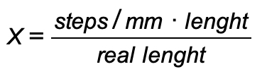

Калибровка экструдера 3D принтера на прошивке Marlin
Для корректной работы экструдера необходимо чтобы длина перемещения заданная в gcode программе, соотвествовала реальному перемещению прутка. Для взаимосвязи количества шагов двигателя и перемещения по оси экструдера используется числовой коэффициент. Ниже изложен его расчет.
Для нахождения коэффициента необходимо выполнить команду перемещения пластика по оси эструдера и произвести фактический замер перемещения прутка. Произвести замер можно с двух сторон:
-
С верхней стороны эструдера, заранее сделав отметки на прутке. Этот вариант подходит тем, кто использует direct экструдер. При этом вы потратите продавливаемый пластик, если не открутить сопло.
-
В случае с откручиванием сопла, можно произвести замер с нижней стороны экструдера. Этот вариант подходит всем. Он наиболее удобен для разметки, тк мы размечаем пластик по факту его перемещения. Плюс позволяет минимизировать расход пластика на этапе калибровки (если не отрезать пластик).
Я рассмотрю второй вариант, тк он мне кажется наиболее практичным. Алгоритм следующий:
-
Нагреваем heatblock до температуры плавления пластика, отводим пластик от сопла, выкручиваем сопло.
M109 S240 // температуру нагрева замените на необходимую для вашего вида пластика G91 // переход в относительную систему координат G1 E-100 F1000 // отвод прутка на 100мм -
Охлождаем экструдер до комнатной температуры, проводим пруток так, чтобы он торчал снизу экструдера, делаем отметку маркером на пластике на уровне эструдера.
M109 S0 // отключаем нагрев экструдера M302 P1 // отключаем проверку минимальной температуры для прокатки прутка G91 // переход в относительную систему координат G1 E150 F1000 // выдавливаем пруток на 150мм, что бы пруток торчал из экструдера -
Выполняем команду прокатки прутка, делаем вторую отметку прутка у экструдера, замеряем длину между отметками на прутке.
G91 // переход в относительную систему координат G1 E200 F100 // выдавливаем пруток на 200ммДля минимизации ошибок скорость прокатки (feedrate) лучше задать небольшую. Длину прокатываемого прутка необходимо указать максимально большой, но удобной для измерения (я исхожу из длины своей большой линейки). Чем длиннее прокатываемый пруток, тем меньше удельная ошибка связанная с точностью измерений.
-
Производим расчет коэфициента согласно формуле.

steps/mm- текущий коэффициент (количество шагов на 1 мм)length- длина экструзии заданная командой (мм)real lenght- длина прутка получившегося после экструзии на самом деле (мм)X- правильное количество шагов/мм
Для того, чтобы узнать текущий коэффициент
steps/mm:-
Выполните команду
M501. -
В выденной информации найдите строку начинающуюся на
M92, числовое значение в этой строке стоящее за символомEбудет текущий коэффициент:M92 X80.00 Y80.00 Z1600.00 E180.00
В случае, если у вас получилась дробь, округлите её в противном случае это будет лишней нагрузкой на мк принтера.
-
Сохраните полученное значение и проверьте результат.
M92 E123 // установить 123 шага/мм для экструдера (где 123 - вычисленный вами коэффициент) M500 // сохранить текущие данные в EEPROMДалее проверьте записалось ли расчетное значение в память после перезагрузки принтера командой
M501. А также произведите проверку соотвествия фактической длины прутка описанной на 3м шаге.Более правильно задать расчетное значение в код прошивки. Таким образом в случае сброса всех настроек принтера корректное значение будет выставлено по умолчанию.
#define DEFAULT_AXIS_STEPS_PER_UNIT { 80, 80, 1600, 123 }
Источник: 3dtoday.ru.